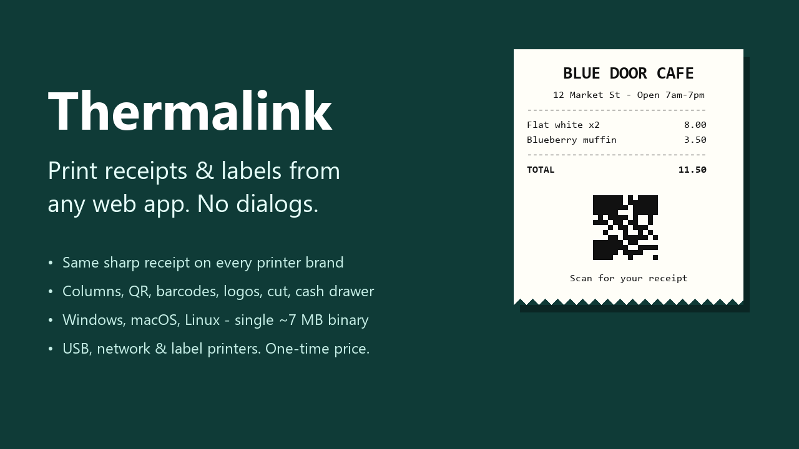

Silent receipt and label printing from any web app
Your web app sends JSON. A small agent on the shop computer prints it. No print dialog, no Java, no yearly fee.
const tl = new Thermalink();
await tl.print(
Thermalink.receipt()
.title('BLUE DOOR CAFE')
.row('Flat white x2', '8.00')
.row('TOTAL', '8.00', { bold: true })
.qr('https://example.com/r/A1B2C3')
.cut()
);
The problem it solves
If you build a POS, restaurant, retail or warehouse web app, you have met this wall. window.print() shows a dialog and cannot cut paper or open the cash drawer. WebUSB only works in Chromium browsers and, on Windows, is refused by the printer's own driver. QZ Tray works, but it bundles Java and its certificate tier is a yearly fee.
Thermalink is one small program that runs next to the printer, plus an 8 KB JavaScript SDK.
What it does
Same receipt on every brand
Image mode draws the receipt as a bitmap at your printer's real width, so it does not depend on built-in fonts, column counts or code pages.
Calibrate in two minutes
thermalink calibrate prints width bars and a ruler. Save the width per printer and the layout fills the paper.
Receipt layout in JSON
Rows, wrapping columns, dividers, QR codes, barcodes, logos, paper cut and cash drawer kick.
USB, network and labels
USB printers through the OS print queue, network printers on port 9100, and raw ZPL, TSPL or EPL for label printers.
Locked to your site
Listens on localhost only. An origin allowlist decides which websites may print, with an API key for scripts.
Source included
The full Go source and tests ship with it, so you can audit it or build it yourself.
How it compares
| Thermalink | QZ Tray | window.print() | WebUSB / Web Serial | |
|---|---|---|---|---|
| Silent, no dialog | Yes | Yes (warning prompts unless you buy a certificate) | No | Yes |
| Price | One-time | $599/year for premium/certificate (buy.qz.io, October 2026) | Free | Free |
| Runtime to install | None, a single ~7 MB file | Bundled Java | None | None |
| Browsers | All modern | All | All | Chromium only |
| USB printer still usable by Windows | Yes | Yes | Yes | No (driver conflict) |
| Network printers (9100) | Yes | Yes | Through the OS | No |
| Cut, drawer, QR, barcodes, logos | Yes | Yes, you build the bytes | No, or unreliable | You build the bytes |
| JSON receipt layout | Built in | No | CSS | No |
Tested, honestly
The ESC/POS and raster output, layout, QR, barcode and image encoding, printer profiles and security checks are covered by automated tests. On real hardware it has been tested end to end (Chrome, agent, printer) on one printer: a BIXOLON SRP-352plusIII on Windows 11.
Other ESC/POS printers use the same standard commands and are expected to work, but have not been individually tested. The macOS and Linux binaries are built and use CUPS, but have not been hardware-tested. The compatibility page lists exactly what has been verified.
Price
Standard
$49One application. Install the agent on unlimited computers of that app's users.
Unlimited / Agency
$149All your apps and client projects, and you may rebrand the agent inside your own installers.
One-time payment, including all 1.x updates. Binaries are not code-signed, so Windows SmartScreen and macOS Gatekeeper will ask once.
Free things
- ESC/POS, ZPL and TSPL cheat sheet: the commands with their bytes, on one page.
- receipt-fit: a tiny script that makes
window.print()use the receipt's real height. - Only need
window.print()? The Receipt Print Kit ($9) has the stylesheet and eight templates.